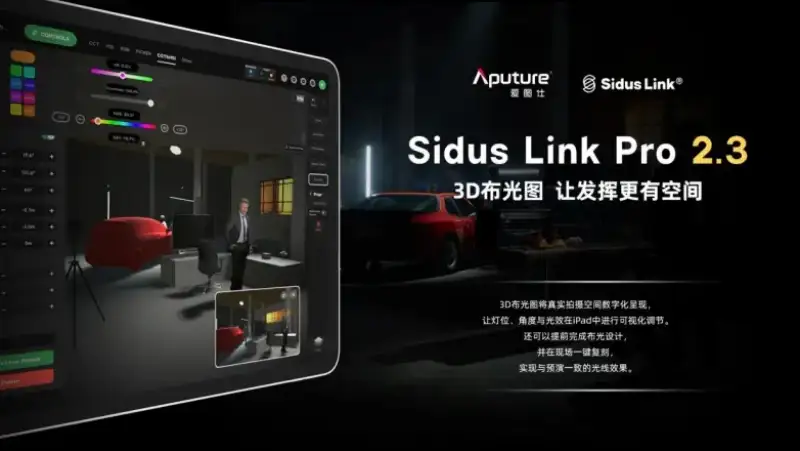
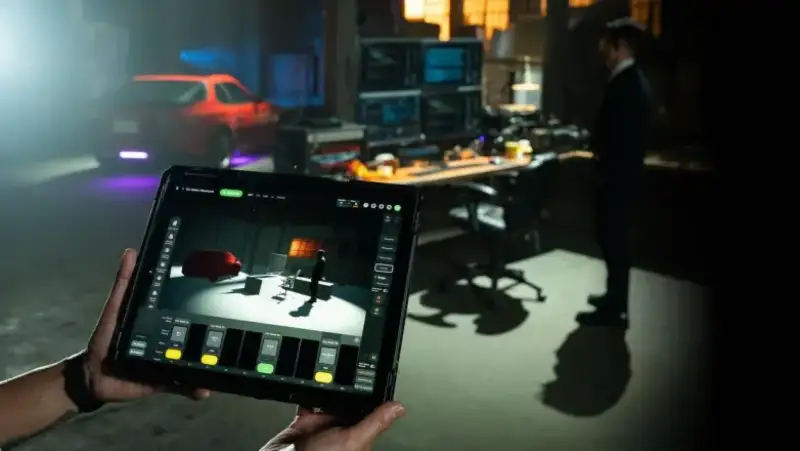

See the result before you place the lights, and give your creativity more room
On April 15, Aputure officially released Sidus link Pro 2.3. This flagship update to a professional lighting control app brings 3D lighting diagrams and light control into one workflow for the first time. The app runs on iPad.

The new 3D lighting diagram shows a real shoot space as a 3D digital model. On the iPad, users can place lights freely, adjust their positions and angles, and preview the light in real time. They can finish the lighting design in the virtual space first, then copy it on set with one tap. This gives the same light as the preview.
Users no longer need to combine several tools. They also do not need the preview system of a complex high-end console. With one iPad, they can do the full flow from lighting plan to on-set execution.
1. 3D lighting diagram mode
The new 3D lighting diagram lets users build a scene freely. They can place lights, actors, and props directly in the Sidus link Pro app. They preview the light, set DMX parameters, and write cue programs. They can finish all of this before they reach the real shoot set.

This makes the user's ideas easier to see. It makes talks with clients faster. It makes the light setup more prepared. It makes decisions easier to put into action.
2. Auto connect and auto setup for the full INFINIMAT line
Sidus link Pro 2.3 adds auto connect and auto setup for all INFINIMAT lights. With firmware V1.4, users cut the setup time for a large light array by a wide margin.
3. Full upgrade to cue editing
It brings all the editing tools from Stage mode into the cue editing flow. The programming experience is now more unified and faster.
Ben Dynice, Aputure's director of product (UI/UX), said:
"The core of Sidus link Pro 2.3 is to make preview practical in everyday production. It brings 3D visuals directly into the control workflow, so users move from plan to execution in a more direct way. Lights that are already patched appear automatically. The cue and DMX settings carry over from the planning stage to the execution stage.
This update makes Sidus link Pro the first and only iPad app that joins a 3D lighting diagram with powerful light control in one workflow."